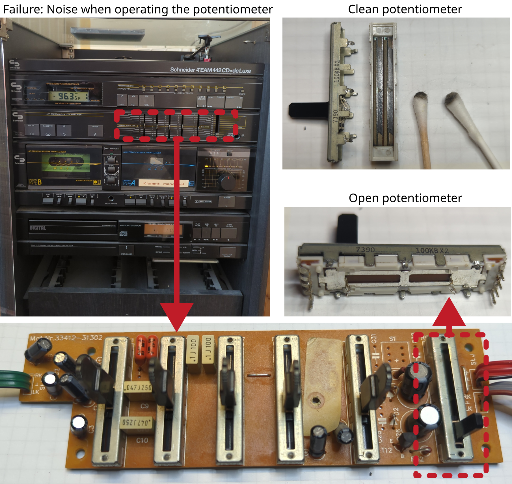
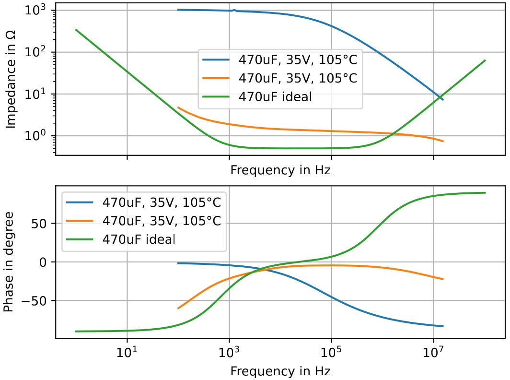

Gas Boiler Heating

Manufacturer: Vaillant
Type: EcoTEC Plus VTW196/3-5A
Description of failure
The heating fails with error F.27 (flame monitor defective).
Failure investigation
As it cannot be ruled out that the electronics of an older heater are defective, all supply voltages should first be checked for stability. Power supply units and linear regulators can usually be located quite easily on the PCB without a circuit diagram. Then measure the supply voltages; in this example, they fluctuate significantly at the marked capacitors.
The capacitors are desoldered and tested. The measurement in the impedance analyzer does not show a clear characteristic of a capacitor, but an undefined curve (blue, orange). For comparison, a characteristic curve of a good component was added 470 µF ideal (green curve).

The defect in the capacitors is therefore clear. These will be replaced. After the replacement, the device works perfectly again.
Capacitor values: 470 µF, 35 V, 105 °C, RM5
Reichelt order number: RAD LXZ 35/470